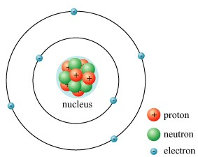
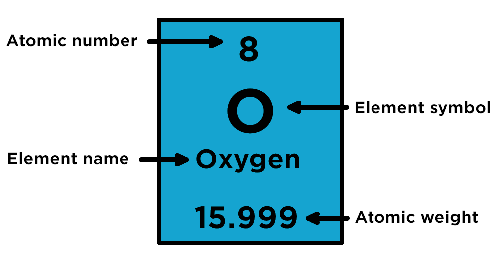
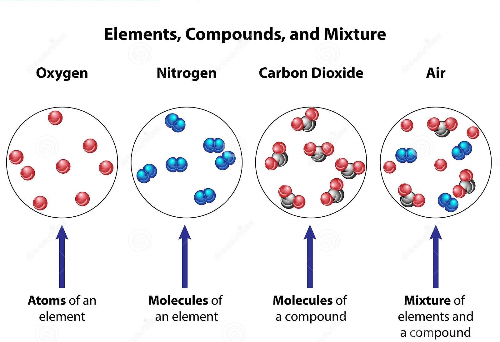

Matter
Matter
Matter is any substance that has a mass and takes up space. The substance is made up of atoms and can be a solid, liquid or gas. The term "matter" includes atoms and anything made up of them. Non-matter includes energy, forces, ideas and feelings/emotions.
Atoms
Atoms are the most basic unit of matter and the smallest individual unit of a chemical element.
Atoms are made up of three different subatomic particles; protons, neutrons and electrons. The protons and neutrons are located in the nucleus and the electrons are located around the nucleus in an elecron cloud. The nucleus makes up 99.9% of the atom's mass and has a very high density compared to the electron cloud, which is mainly empty space. However, the nucleus is tiny compared to the electron cloud. Atoms are a single neutral particles. Molecules are neutral particles made up of two or more atoms bonded together.
Elements
Elements are pure substances which only contains one type of atom. They can not be broken down into simpler substances by chemical means. There are a total of 118 elements which are each shown in the Periodic Table. The number of protons in the nucleus is the defining property of an element, known as the atomic number. The element symbol is an abbreaviation of the element name. The atomic weight is the average mass of the element.
Compounds
Chemical compounds are any substance composed of identical molecules consisting of atoms of two or more chemical elements. They have a fixed ratio which determines the composition of the compound. The ratio of each element is usually expressed by a chemical formula. For example, water (H₂O) is a compound consisting of two hydrogen atoms bonded to an oxygen atom.
Mixtures
A mixture is a material made up of two or more different chemical substances which are not chemically combined. Mixtures are one product of mechanically blending or mixing chemical substances such as elements and compounds, without chemical bonding or other chemical change, so that each ingredient substance retains its own chemical properties and makeup. They do not have a fixed ratio.
About Us
Chemistry Education is a group of science educators established in 2021. We aim to improve society's knowledge about science, specifically through the teachings of Chemistry. We want to provide an easily accessible online learning platform for individuals across the globe. We hope to educate the future about Chemistry. If you have any questions, please feel free to contact us!
Contact Us
Email: chemistry.education@learning.edu.au
Phone: 0123-456-789
Mail: 123 Sydney Street, NSW 2000 Australia
Facebook: @Chemistry_Education
Twitter: @Chemistry_Education
Instagram: @Chemistry_Education